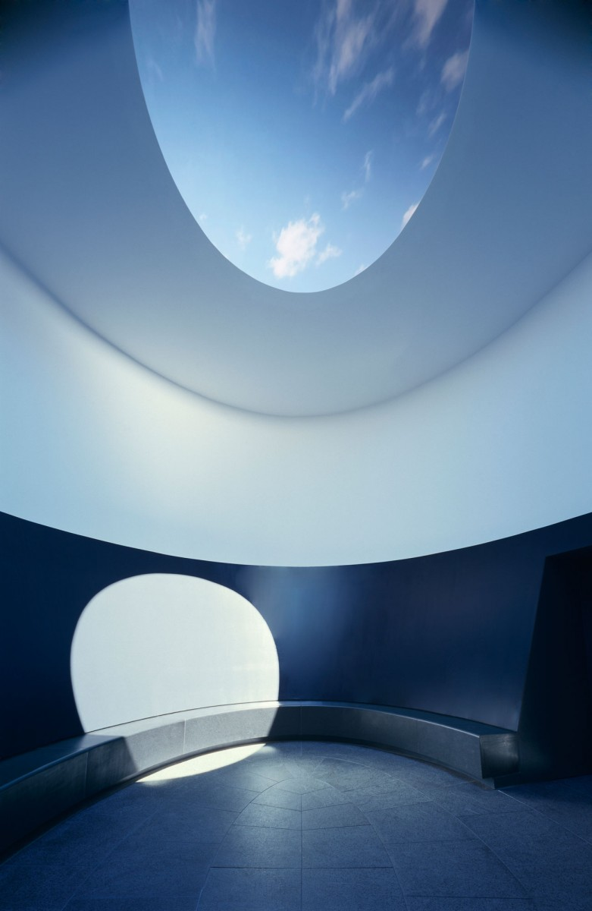

Texas Algebraic Geometry Symposium 2019
The Texas Algebraic Geometry Symposium is jointly hosted by the University of Texas at Austin, Rice University and Texas A&M University. We aim to bring some of the latest developments in Algebraic Geometry to a regional audience.
The 2019 Symposium will be held February
Piotr Achinger IMPAN.
Angela Gibney Rutgers University.
Michael Groechenig University of Toronto.
Paul Hacking University of Massachusetts Amherst .
Danny Krashen Rutgers University.
Nicholas Proudfoot University of Oregon.
Harold Williams University of California, Davis.
Organizers: David
Schedule: Available here.
TAGS is generously supported by the National Science Foundation and the Mathematics Departments of Rice, Texas A&M and UT Austin.
Archive of Previous Symposia:
Texas A&M University, April 6-8, 2018.
Rice University, April 21-23, 2017.
UT Austin, April 2-3, 2016.
Texas A&M, April 10-12, 2015.
Rice University, April 4-6, 2014.
Texas A&M University, April 27-29, 2012.
Rice University, April 22-24, 2011.
Texas A&M University, May 1-3, 2009.
Rice University, April 11-13, 2008.
UT Austin, March 30 - April 1, 2007.